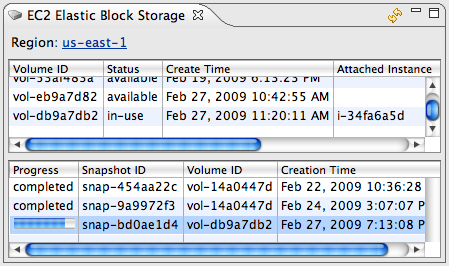

The Elastic Block Storage view allows you to manage your EBS volumes and snapshots. EBS volumes provide persistent, fault tolerant storage with a standard block device interface. From the EBS management view you can create new volumes, delete existing volumes, create new snapshots of your volumes, and delete snapshots.
